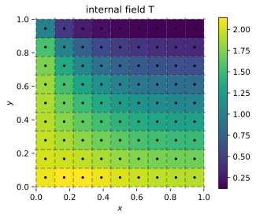
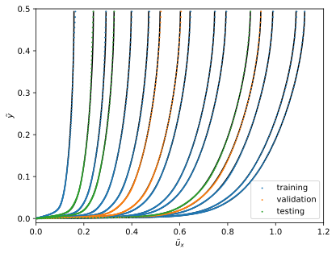
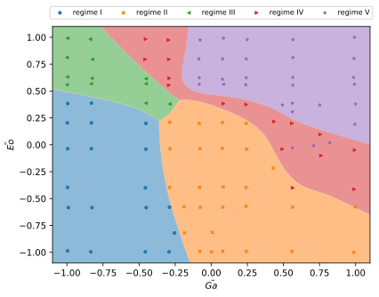
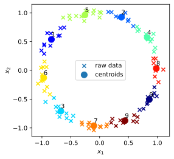
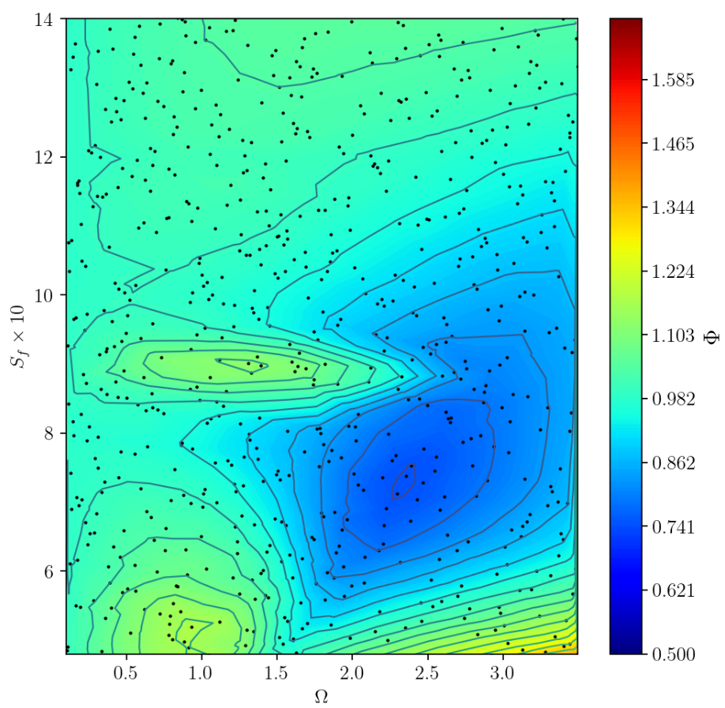

Course overview and introduction
Andre Weiner
TU Dresden, Institute of fluid mechanics, PSM

These slides and most
of the linked resources are licensed under a
Creative Commons Attribution 4.0
International License.

Outline
- course logistics
- reporting issues
- combining ML and CFD
- lecture projects
- technology stack
Course logistics
Times and location
- lecture: Tuesdays 7:30-9:00pm
- exercise: Tuesdays 4:40-6:10pm
- location: ZEU/114/H
Refer to OPAL for a detailed schedule of all lecture and exercises.
Workload and requirements
- 5 CP, ~150h workload
- 13 lectures + 13 exercise sessions
- $150h-13*3h \approx 110h$ of self-study
- prior ML/CFD knowledge is a plus
- programming knowledge is essential
- written exam 1.5h
Resources and communication
- slides and exercises available on GitHub
- all resources are updated regularly
- getting help: GitHub issues (preferred), mail
- general feedback: mail/OPAL
Exercises
- exercise session: short introduction and Q & A
$\rightarrow$ mostly self-study - exception: exercise 0 (Python intro)
- remote support by course assistant
Github issues
learn to communicate professionally
Do you have a Github account?
Note: a Github account is not required but recommended.
How to open a new issue:
- go to the Github repository
- click on Issues (top left)
- use the search to check if a similar
issue has been reported already - if not, open a New issue (top left)
- report the issue and click on
Submit new issue (bottom right)

How to write an issue report:
- precise title
Incorrect eigenvalue formula lecture 2 slides - short description
Comparing the formulas between script and slides of lecture 2, I found an inconsistency. - precise problem description
The formula reads $\mathbf{XQ}=\mathbf{Q\Lambda}$ in the script and $\mathbf{XQ}=\mathbf{\Lambda Q}$ on the slides.
Optional tips for writing issues:
- expected behavior
I expected a 3x2 tensor but got a 2x3 tensor. - suggestion for correction
I believe the correct formula is $\mathbf{XQ}=\mathbf{Q\Lambda}$. - link related issues using #issue_number
The problem might be related to issue #6. - provide details about your setup
I am running Ubuntu 20.04 using WSL.
See also: 45 Github Issues Dos and Don't
Combing ML and CFD
Why combine CFD and ML?
CFD
- produces large amounts of complex data
- requires data or representations thereof
ML
- finds patterns in data
- creates useful representations of data

Progression of snapshot size in direct numerical simulations (DNS).
Simulations become more and more sophisticated:
- turbulence models
- transport models
- equations of state
- mixture models
- linear solver settings
- discretization schemes
- ...
$\rightarrow$ closure models and decision making required
But how exactly can ML help?
Problems that ML solves
Data is the transmitter between ML and CFD
What type of ML could be helpful in the following scenarios?
Creating a transport model $\mu (T)$ based on experimental data ...
- regression
- classification
- clustering
- dimensionality reduction
Predicting the impact behavior of a droplet on a surface ...
- regression
- classification
- clustering
- dimensionality reduction
Switching between two turbulence models in a RANS simulation ...
- regression
- classification
- clustering
- reinforcement learning
Finding coherent structures in turbulent flows ...
- reinforcement learning
- classification
- clustering
- dimensionality reduction
Closed-loop active flow control of the flow past a cylinder
- regression
- reinforcement learning
- clustering
- dimensionality reduction
- domain knowledge is essential
- many advanced problems require
combination of multiple ML algorithms
Lecture projects
Lectures 2 & 3: write a CFD solver from scratch
Lectures 4 & 5: learn approximate velocity profiles
Lecture 6: predict the stability regime of rising bubbles
Lectures 7: compute mass transfer at high Schmidt numbers
Lectures 8 & 9: find coherent structures in turbulent flows
Lecture 10: create a reduced-order flow model
Lecture 11: optimal open-loop flow control
Lectures 12 & 13: learn an agnostic control law from scratch